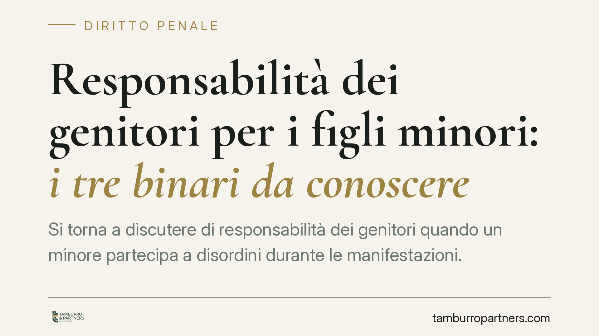

Responsabilità dei genitori per i figli minori: i tre binari da conoscere
Si torna a discutere di responsabilità dei genitori quando un minore partecipa a disordini durante le manifestazioni. Circolano notizie su un intervento normativo che inasprirebbe sanzioni e obblighi risarcitori. Al netto di provvedimenti ancora da verificare in Gazzetta Ufficiale, è utile chiarire cosa prevede oggi l'ordinamento, distinguendo tre piani che spesso vengono confusi tra loro.

Una premessa necessaria sulle fonti
Nel dibattito pubblico circola il riferimento a un decreto legge che introdurrebbe sanzioni amministrative a carico dei genitori (nell'ordine di alcune centinaia di euro), un nuovo reato legato alle violenze di piazza e modifiche alle regole sull'imputabilità dei minori.
Su questo punto siamo netti: qualsiasi valutazione giuridica presuppone la verifica del testo pubblicato in Gazzetta Ufficiale. Finché numero, data e contenuto non sono accertabili, non è corretto presentare quelle disposizioni come diritto vigente. Qui ci limitiamo quindi a illustrare il quadro normativo attuale, segnalando dove un eventuale intervento inciderebbe.
I tre binari della responsabilità
Quando un minore è coinvolto in fatti violenti, la responsabilità può muoversi su tre piani distinti e autonomi. Confonderli genera equivoci rilevanti.
1. Il piano penale riguarda il minore autore del fatto. Il procedimento si svolge davanti al Tribunale per i minorenni, con regole proprie. L'art. 98 del codice penale stabilisce che il minore tra i 14 e i 18 anni è imputabile solo se, al momento del fatto, era capace di intendere e di volere. Non si tratta di una presunzione automatica: la capacità va accertata in concreto, caso per caso, valutando maturità e consapevolezza del singolo ragazzo.
2. Il piano civile riguarda i genitori. L'art. 2048 del codice civile prevede che il padre e la madre rispondano del danno cagionato dal fatto illecito dei figli minori conviventi. È una responsabilità per fatto altrui che si fonda su un difetto di sorveglianza e di educazione. I genitori possono liberarsi solo provando "di non aver potuto impedire il fatto": una prova liberatoria che la giurisprudenza interpreta in senso rigoroso, richiedendo la dimostrazione di un'educazione adeguata e di una vigilanza proporzionata all'età.
3. Il piano amministrativo riguarda le eventuali sanzioni pecuniarie. Qui si collocherebbero le misure di cui si discute. Nel nostro ordinamento il procedimento sanzionatorio amministrativo è retto, in via generale, dalla legge n. 689 del 1981. Contro l'ordinanza-ingiunzione è previsto il rimedio dell'opposizione dinanzi all'autorità giudiziaria, nel termine di 30 giorni dalla notificazione (art. 22 e seguenti della legge 689/1981). È questo, e non formule generiche, il parametro cui ancorare ogni valutazione sui termini e sui mezzi di tutela.
Il nodo della responsabilità personale
Un eventuale automatismo sanzionatorio a carico dei genitori solleva una questione di principio. L'art. 27 della Costituzione afferma il carattere personale della responsabilità penale. Pur riferendosi in senso stretto alla materia penale, il principio di proporzionalità e di personalità della responsabilità orienta la valutazione di legittimità anche delle sanzioni afflittive di natura amministrativa.
Una misura che colpisca i genitori a prescindere da un concreto accertamento della loro condotta — del difetto di vigilanza o di educazione — si esporrebbe plausibilmente a un vaglio di costituzionalità. Sarà decisivo come un eventuale testo definitivo graduerà la responsabilità rispetto al comportamento effettivamente tenuto.
Implicazioni pratiche per le famiglie
Per un genitore la differenza tra i tre binari non è teorica. Il figlio può essere destinatario di un procedimento penale minorile; i genitori possono essere chiamati a risarcire i danni in sede civile; e, in presenza di una fattispecie amministrativa, possono ricevere un'ingiunzione di pagamento dall'autorità competente.
Sono procedimenti che seguono regole, tempi e logiche diverse. Una contestazione su un piano non chiude gli altri.
Cosa fare in concreto
- Verificare sempre la fonte: prima di dare per certa una sanzione, controllare l'esistenza e il contenuto effettivo della norma invocata nell'atto.
- Non ignorare le notificazioni: i termini per l'opposizione a una sanzione amministrativa decorrono dalla notifica e sono perentori (30 giorni ex art. 22 L. 689/1981).
- Conservare ogni documento: notifiche, verbali e comunicazioni vanno custoditi con data certa, perché incidono sul calcolo dei termini.
- Documentare l'attività educativa e di vigilanza: in sede civile ex art. 2048 c.c. questi elementi sono rilevanti ai fini della prova liberatoria.
- Valutare per tempo i rimedi disponibili: ciascun binario ha mezzi di tutela propri, con scadenze autonome da monitorare separatamente.
---
Contributo informativo a cura di Tamburro & Partners - Avv. Giuseppe Tamburro. Non costituisce parere legale.
Ogni condominio ha una storia a sé.
Se gestisci un'amministrazione e vuoi un confronto su una specifica questione condominiale, scrivi allo studio. Ti rispondiamo entro un giorno lavorativo.